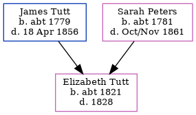

Elizabeth Tutt c1821 - 1828
[ Home ] | [ Calendar ] | [ Surnames Index ] | [ Errors ] | [ Family History ]The child of James Tutt (a farm bailiff) and Sarah Peters (a nurse), Elizabeth Tutt, the three times great-aunt of Nigel Horne, was born c. 18211 and baptised in Cheriton, Kent, England on 25 Nov 1821.
She died in 18281.
Parents
- James was born c. 1779
- Sarah was born c. 1781
Citations
- Kent Burials - Findmypast
Media
England Births & Baptisms 1538-1975 - R_885432706
Kent Baptisms - GBPRS/CANT/B/96413864
East Kent Burial Index - GBPRS/D/407116360/1
Family Tree
Map
Generated by ged2site. Last updated on Jul 3, 2024
Known Issues
Date of birth is known, but not place
Date of death is known, but not place